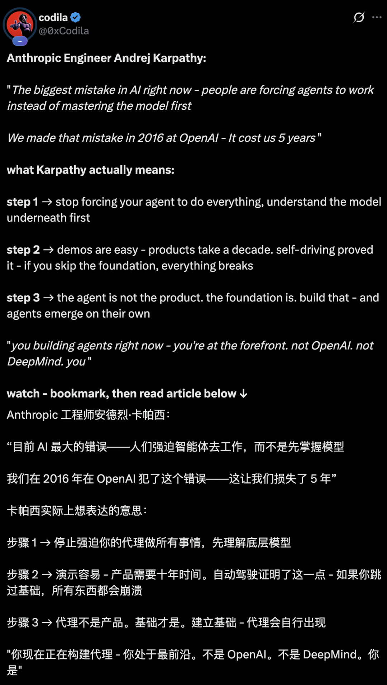

绕街区一圈不是产品
自动驾驶的难点不在 Demo，而在长尾场景、可靠性和系统工程。
ARTICLE TO DEMO / 2026-07-06
Karpathy 的判断更像一张路线图：先理解底层模型，再谈可靠代理。
新智元 · Karpathy最新开喷
LESSON 01 / WORLD OF BITS
World of Bits 想让 Agent 操作网页、订票、点餐。
当时主要工具是强化学习，模型能力还没准备好。
今天的工具箱换了，但“别跳过地基”仍然成立。
LESSON 02 / TEN-YEAR PRODUCT
自动驾驶的难点不在 Demo，而在长尾场景、可靠性和系统工程。
真正难的是稳定完成任务、可恢复、可评估、可持续改进。
LESSON 03 / FOUNDATION FIRST
把地基打牢，Agent 会自然涌现；地基不牢，外壳越快越脆。

FRONTIER / BUILDERS AT THE EDGE
大厂在 Transformer 训练和规模化经验上积累极深。
没有人有五年先发优势，创业者和黑客仍能撞出新东西。
TAKEAWAY / ROUTE MAP
先把模型能力、任务边界和评估方式吃透。
从真实闭环开始，而不是从万能助手口号开始。
准备做十年，别把一场 Demo 误认为终局。